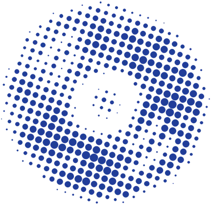
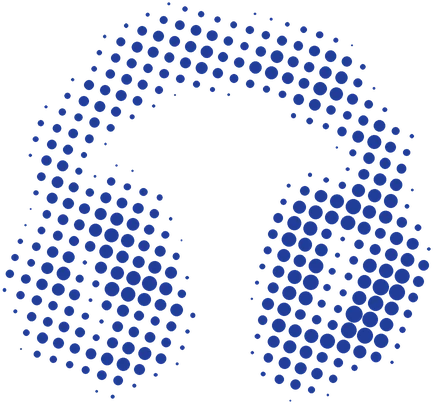
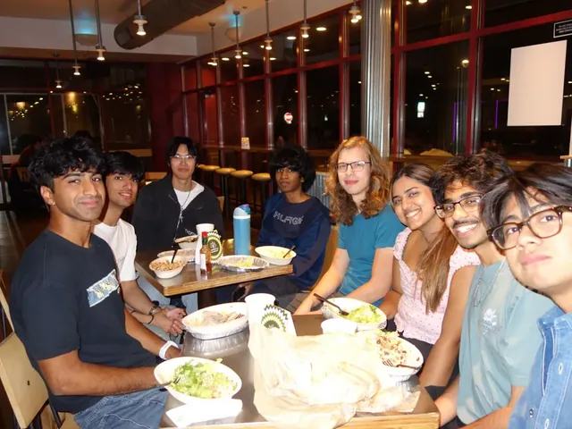

Hi, I'm Anthony
I'm a design student at UC Davis, originally from Roseville, California. Before coming to Davis, I was previously a computer science major for two years before transferring to design.
I've always been involved in creative hobbies such as music and art, but I never thought it could be a potential career for me. It wasn't until I learned about UX design that I thought it was something I could do for a career. I feel like it incorporates the technical thinking skills that I developed through CS and my love for creative hobbies into a role.


My work1 / 6
10dollar
0:00
1:31
Currently
final year at UC Davis, looking for internships
vs ATIF at EVO
My communities
Where I like to spend a lot of my time.
- #includeDesign Lead
- Prod. DavisGraphic Designer
- Design InteractiveProduct Designer
- CodelabUX Researcher

Codelab